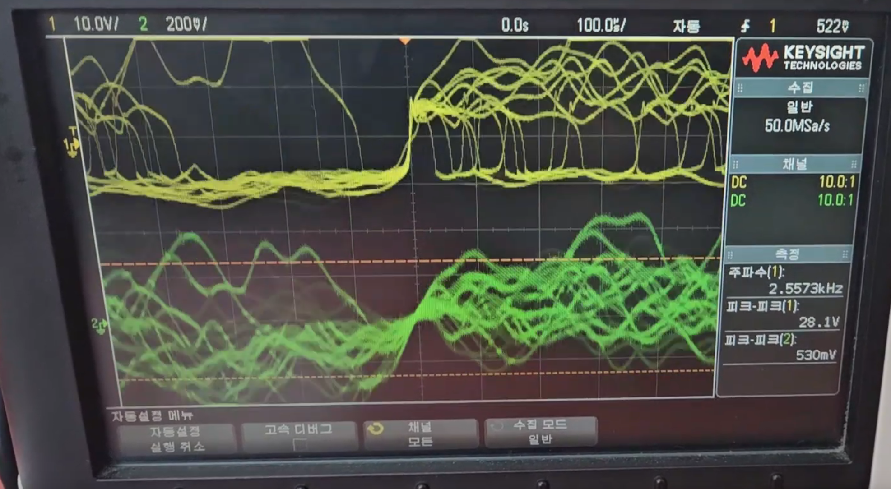

프로젝트 제안 설명
오디오 앰프는 저주파 신호를 증폭하는 장치로, 전자공학에서 배우는 아날로그 회로 이론과 트랜지스터 동작 원리를 적용할 수 있는 프로젝트이다. 특히, 오디오 앰프는 신호 처리 능력 또한 요구하기 때문에 신호 증폭 및 필터링 기술을 학습하고 응용할 수 있다. 따라서 오디오 앰프 설계는 전자공학의 기본 원리와 실제 응용 사이의 연결고리를 이해하는 데 매우 적합한 주제라고 판단했다.
동작 설명 및 회로도
-전체
>동작 설명

오디오 파워앰프는 입력된 오디오 신호를 단계적으로 증폭하여 스피커를 구동할 수 있는 신호로 만드는 장치이다. 입력단을 통해 들어온 신호는 전압증폭단에서 전압을 높이고, 이후 전류증폭단에서 전류를 높인 뒤 출력단을 통해 스피커로 전달된다. 이렇게 증폭된 신호가 스피커를 구동하여 소리로 출력된다.
>회로도
입력단을 통해 들어온 신호를, 전압증폭단에서 전압 증폭 후 전류증폭단에서 전류 증폭하여 출력단을 통해 스피커로 전달한다.
-전압증폭단
>동작 설명


전압 증폭단은 입력된 신호의 전압을 증폭하여 신호의 세기를 높이는 단계로, 증폭된 신호가 출력단에서 충분한 전력을 생성할 수 있도록 한다. 입력 신호의 위상은 그대로 가져가면서 전압만 증폭시키기 위해 비반전 증폭기를 사용한다.
>시뮬레이션
PSpice를 이용한 시뮬레이션 결과이다. 전압 측정 결과, 입력 전압은 약 0.1V, 출력 전압은 약 5V로 전압 이득이 약 50인 것을 알 수 있다.
0.1V 입력 → 5V 출력 ⇒ Gain 50
전류증폭단
>동작 설명

전류 증폭단 전압 증폭단에서 증폭된 신호를 받아, 전류를 증폭하여 스피커에 필요한 충분한 전력을 공급하는 단계이다. 이 단계는 주로 출력단에서 이루어지며, 스피커를 구동하기 위해 높은 전류를 제공한다. 입력의 반 주기는 선형영역에서 동작하고, 나머지 반 주기는 차단영역에서 동작하게 하는 class B 증폭기를 사용한다. 그리고 동일한 트랜지스터를 쌍으로 사용하여 차단되는 반주기를 얻는다.
>시뮬레이션
PSpice를 이용한 시뮬레이션 결과이다. 전류 측정 결과, 입력 전류는 약 121uA, 출력 전류는 약 5mA로 전류가 약 41배 증폭된 것을 알 수 있다.
121uA → 5mA ⇒ 41배 전류 증폭
결과
-전압증폭


-결과물 영상
최종 완성된 오디오 앰프로 음악을 재생하는 영상이다. QWER의 '고민중독'을 선곡했다. 동시에 오실로스코프로 측정한 전압을 확인해보면 전압 이득이 약 50인 것을 확인할 수 있다.